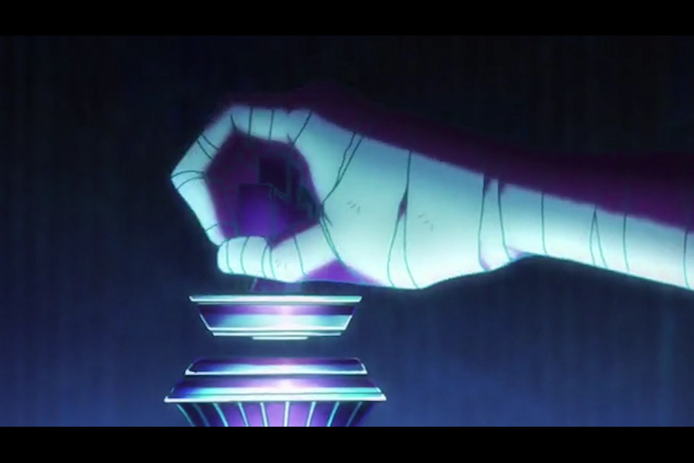

自己紹介
伊 藤 嘉 宏
↓紹介動画
趣味:MAD作りや、アニメ、ゲーム、模写、サッカー野球観戦etc.
今回は少し自分なりのMAD作りのやり方を説明していこうと思います。
自分はまず、曲とアニメを決め、曲は毎日聞いて、アニメはフルで見ます。 アニメを見るときに「このシーンは使いたい」「このシーンは曲に合いそう」とか考えながら見て、アニメを見終わったら、歌詞や音にあったシーンを探して数秒ごとに組み合わせていって完成です。
今も作っているのでまた、完成したら是非見てください！
↓作成中の動画
今までのMAD.模写一覧